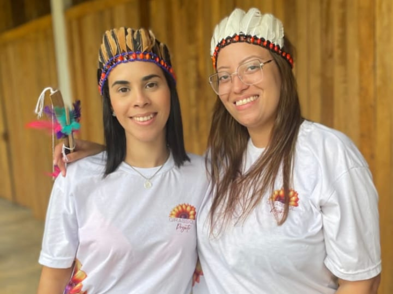

O Projeto Girassol, maior ONG do Capão Redondo, espalha solidariedade e doçura pelas ruas distribuindo chocolates às crianças da comunidade. Nossa missão já alcançou diferentes realidades: realizamos entregas de ovos de Páscoa na tribo Krukutu, levando respeito e inclusão cultural, e também levamos carinho e esperança a casas de orfanatos. Cada ação é uma semente de amor que floresce em sorrisos, mostrando que o chocolate pode ser muito mais que um doce — pode ser um símbolo de afeto, união e transformação social.